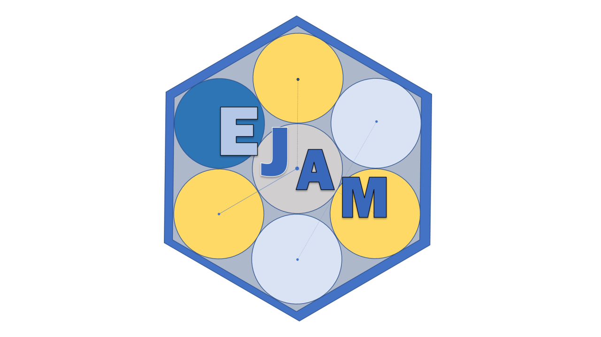

EJScreen Indicators: Lead Paint
Source:vignettes/env-indicators/ejscreen-indicators-overview-lead-paint.Rmd
ejscreen-indicators-overview-lead-paint.RmdWhat is the lead paint indicator?
The “lead paint indicator” is based on the percentage of housing units built before 1960, a proxy for how much lead-based paint people might be exposed to. EJScreen presents this potential exposure to lead-based paint using percentile rank, ranging from 0 (lowest) to 100 (highest) with higher scores representing higher potential for exposure.
Why is lead paint important?
- Lead-based paint, often present in older homes built before 1978, is one of the most common ways in which people can be exposed to lead.
- Lead-based paint becomes a hazard when people have direct contact with peeling painted surfaces or released lead particles, since lead may then adhere to their hands and other parts of their bodies, and some portion of the lead may be ingested. If the painted surfaces are disturbed through home renovation, repair, or painting activities, some lead-based paint particles may become temporarily suspended in the air as lead dust, then may be inhaled or ingested after falling on food. Children may be exposed to lead dust when they put their hands or objects into their mouths as part of their normal hand-to-mouth behavior.
- Lead is especially dangerous to children under the age of six because their growing bodies absorb more lead than adults. Even low levels of lead exposure to children can result in damage to the brain and nervous system; delayed growth and development; behavior and learning problems; lower IQ; speech and hearing problems; and hyperactivity.
How does EJScreen create the lead paint indicator?
The percentage of older housing units is used as a proxy for potential exposure to lead-based paint and lead-containing dust that accumulates indoors, in homes, or in other buildings where lead-based paint was used. EJScreen uses the percentage of housing stock built before 1960 because regulations banning lead-based residential paint in 1978 led to the reduction and finally an end to the use of such paint in housing. The decision for EJScreen to use housing units built before 1960 is based on Jacobs et al., 2002.
The housing stock data are derived from the American Community Survey (ACS) 5-year Summary block group-level estimates.
For an historical overview of methods and descriptions of calculations see the: EPA’s archived version of its Technical Documentation (still available as of October 2026). If the EPA link is failing, try the Wayback Machine archived version (will be very slow to open)
Moving Forward – What You Can Do
- Protect yourself and your family from exposure to lead:
- The EPA Actions to Reduce Potential Lead Exposure webpage (also available in Spanish) provides helpful information on preventing lead exposure and lead poisoning, especially in young children.
- The EPA’s Protect Your Family from Lead in Your Home pamphlet, which explains the dangers of lead in your home and how to protect your family from lead-based paint hazards. This pamphlet is required to be provided to prospective buyers and renters of pre-1978 homes and is available in multiple languages.
- Lead-based inspections and lead risk assessments are useful first steps to determine whether lead-based paint is present in a home and to address lead-based paint hazards. These can lead to thoughtful decisions on managing lead-based paint and lead hazards in homes.
- Know your rights before you buy or lease housing and your responsibilities before you sell or lease housing by reviewing information on the EPA’s Real Estate Disclosures about Potential Lead Hazards.
- Learn about Lead Laws and Regulations.
- Work with your local leaders to identify lead issues and develop an action plan using the Local Lead Action Plan Guide.
- Learn more about how the EPA and others continue to reduce
lead-based paint exposure in communities:
- The EPA’s Strategy to Reduce Lead Exposures and Disparities in U.S. Communities advances the Agency’s work to protect the public from lead with an emphasis on high-risk communities.
- The EPA Lead Exposures Page provides an extensive assortment of resources, educational documents, and outreach materials for protecting the public from harmful lead exposures, including exposure from lead in homes, water, air, soil, and consumer products.
- The EPA’s publications on Data Mapping to Identify High Lead Exposure Risk Locations are available for local, state, and federal government officials to identify high lead exposure risk locations and communities.
- Learn about the EPA’s Lead Renovation, Repair and Painting (RRP) Program which requires that RRP projects that disturb lead-based paint in homes, childcare facilities, and preschools built before 1978 be performed by lead-safe certified contractors.
- The Centers for Disease Control and Prevention’s Childhood Lead Poisoning Prevention Program is dedicated to eliminating childhood lead poisoning as a public health problem and supports state and local health departments.
- The U.S. Department of Housing and Urban Development’s (HUD) Office of Lead Hazard Control and Healthy Homes provides funds to state and local governments to reduce lead-based paint hazards, enforces lead-based paint regulations, provides public outreach and technical assistance, and conducts studies to protect children and their families. HUD’s About Lead-based Paint Page provides tips and resources.
- Attend a Community Lead Awareness Session in English or Spanish. The EPA is partnering with communities across the country to host a series of free educational sessions on the dangers of lead and how to reduce and prevent lead exposure.